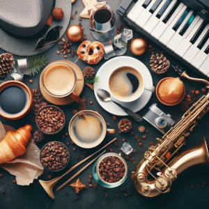
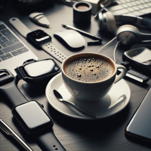
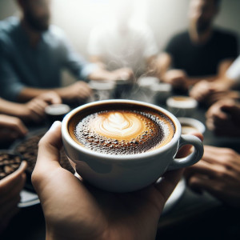
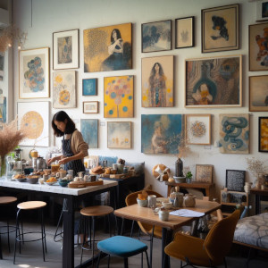
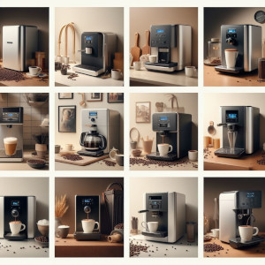

Próximos Eventos
Descubre nuestros emocionantes eventos que tendrán lugar en nuestro local y únete a la diversión.
Fiesta temática de café y jazz
Fecha: 10 de Febrero de 2024
Disfruta de una noche llena de café aromático y música jazz en nuestra fiesta temática. ¡Viste de época y únete a la diversión!
Charla de café y tecnología
Fecha: 18 de Marzo de 2024
Únete a nosotros en esta emocionante charla sobre la intersección del café y la tecnología. Aprenderás sobre las últimas tendencias en la industria y disfrutarás de deliciosas tazas de café.
Cata de café especial
Fecha: 20 de Junio de 2024
¡No te pierdas nuestra cata de café especial! Prueba una variedad de cafés exquisitos de todo el mundo y descubre sus sabores únicos.
Eventos Pasados
Revive nuestros emocionantes eventos pasados y mantente atento para futuras experiencias.
Taller de arte latte
Fecha: 20 de abril de 2023
Nuestro taller de arte latte fue un gran éxito. Los asistentes aprendieron a crear hermosas obras de arte en sus tazas de café.
Presentación de cafeteras digitales
Fecha: 15 de marzo de 2023
En nuestra presentación de cafeteras digitales, presentamos las últimas innovaciones en tecnología de café para el hogar.